03 / Code and experimentsResearch projects
The figures and numbers below come from the
results/ and figures/ folders of each repository, not from a paper draft.
PhishGuard — Local Browser Threat Detection with Quantized Multimodal Models code →
Browser safety usually works by reputation: the URL goes to a remote blocklist and the answer depends on someone having seen that page before. Short-lived phishing and throwaway scam mirrors are built to stay ahead of that. PhishGuard looks at the page instead. Each tab is screenshotted and read by a vision-language model while a second model reasons over the URL string. Both are 4-bit quantized and run on the user's own machine, so no URL, screenshot or page text ever leaves the device.
| Class | Precision | Recall | F1 |
|---|---|---|---|
| Phishing | 92.1% | 89.4% | 0.907 |
| Adult content | 94.8% | 93.2% | 0.940 |
| Gambling | 90.3% | 87.6% | 0.889 |
| Malware / scam | 88.6% | 84.9% | 0.867 |
| Macro average | 91.4% | 88.7% | 0.901 |
| Configuration | Macro F1 |
|---|---|
| URL-only LLM, no vision model, no knowledge base | 0.712 |
| Vision model, single pass | 0.831 |
| Vision model, two passes | 0.857 |
| Two passes + knowledge base, no LLM | 0.869 |
| Two passes + LLM, no knowledge base | 0.878 |
| Full system | 0.901 |
False positives on legitimate pages run at 4.8%, 37 of 769 samples, mostly Cloudflare challenge pages, medical sites whose age-gate disclaimers read as adult signals, and licensed EU and UK bookmakers the system blocks alongside unlicensed ones. These numbers are as reported in the paper: the artifacts needed to recompute them are not in the repository yet, so a reader cannot check them there.
QCIDS — Quantum–Classical Feature Selection for Intrusion Detection code →
Picking which network-traffic features to keep for intrusion detection, written as a QUBO. I solved it with QAOA on simulators and on IBM hardware, with simulated annealing, and with the usual classical selectors. Every solver hands its features to the same classifier and the same cross-validation, so whatever changes comes from the feature subset and nothing else.
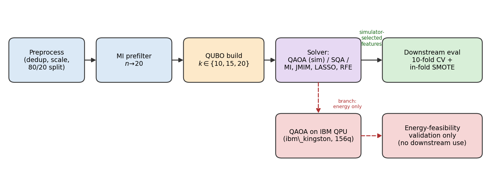
| Solver | NF-ToN-IoT | NF-UNSW-NB15 | X-IIoTID |
|---|---|---|---|
| Greedy mutual information | 0.742 | 0.465 | 0.882 |
| Simulated quantum annealing | 0.742 | 0.465 | 0.882 |
| QAOA p = 1 | 0.735 | 0.461 | 0.883 |
| QAOA p = 2 | 0.727 | 0.454 | 0.883 |
| QAOA p = 3 | 0.730 | 0.466 | 0.884 |
With 20 features to pick, every solver ends up choosing more or less the same ones and the scores tie. There is no quantum win here. Simulated annealing does solve the QUBO almost exactly (approximation ratio 0.9998 or better).
| Solver | k = 20 | k = 15 | Change |
|---|---|---|---|
| Greedy mutual information | 0.760 | 0.718 | −4.3 pts |
| QAOA p = 2 | 0.758 | 0.763 | stable |
| Simulated quantum annealing | 0.760 | 0.757 | stable |
Tighten the budget to 15 and greedy selection walks into a trap. It keeps three features that score well overall but carry almost nothing for the Ransomware class, whose F1 falls to 0.48. Searching over combinations instead of ranking one feature at a time avoids this and puts Ransomware back at 0.82 (paired test, p = 0.045). Two things to be clear about: some classical selectors escape the trap too, so this is about combinatorial search rather than anything quantum, and on the other two datasets no solver pulls ahead.
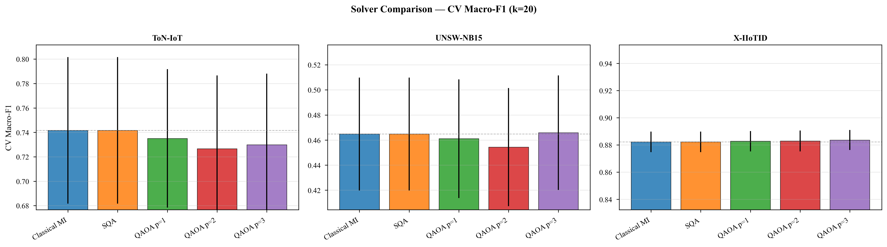
DARE-FS — Detecting and Repairing Class-Specific Feature-Selection Harm code →
Drop some features and your accuracy barely moves, so the selection looks fine. Meanwhile a rare class has become much harder to detect, and the majority classes hide it. DARE-FS runs after any selector: it detects which classes were hurt, works out which discarded features caused it by adding them back on validation data, and then restores the smallest set of features that brings those classes back. Accepted at ICTAI 2026.
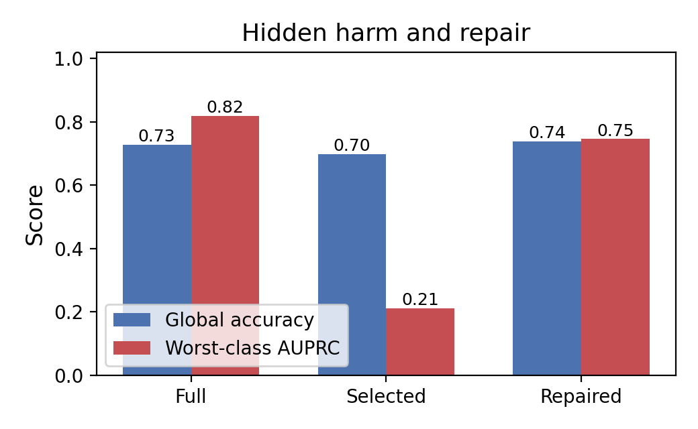
| Dataset | Domain | Harmed | Hidden | Macro-AUPRC | Accuracy | Repair size |
|---|---|---|---|---|---|---|
| X-IIoTID | IIoT intrusion | 13/18 | 0 | 0.97 → 0.99 | 0.95 → 0.97 | 1.0 |
| NF-ToN-IoT | IoT intrusion | 18/18 | 0 | 0.81 → 0.88 | 0.91 → 0.94 | 1.8 |
| Arrhythmia | ECG | 18/18 | 11 | 0.43 → 0.50 | 0.70 → 0.74 | 5.6 |
| Diabetes-130 | Readmission | 9/18 | 0 | 0.38 → 0.43 | 0.51 → 0.55 | 2.2 |
Harm that stays hidden from the aggregate metric shows up on Arrhythmia only: 13 classes absorb a severe one-vs-rest collapse without moving accuracy much. Elsewhere the harmed classes are larger or the label space smaller, so some of the damage does surface in the headline number.
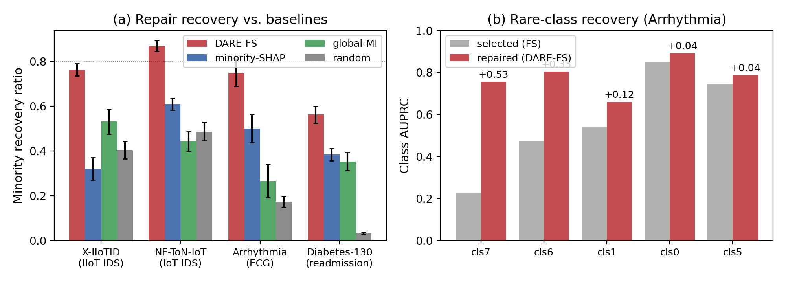
| Dataset | vs random | vs global MI | vs class-specific SHAP |
|---|---|---|---|
| X-IIoTID | +0.358 | +0.231 | +0.442 |
| NF-ToN-IoT | +0.382 | +0.425 | +0.260 |
| Arrhythmia | +0.576 | +0.484 | +0.249 |
| Diabetes-130 | +0.529 | +0.210 | +0.179 |
Every 95% bootstrap interval excludes zero (Wilcoxon signed-rank, Holm-corrected, p ≤ 0.0087). On synthetic data with planted minority-relevant features, restored features hit planted variables with 0.92 precision and recover 9 of the 12 planted features. The limitation is budget: allow the baselines four or five add-backs and class-specific SHAP overtakes DARE-FS, which saturates at 0.847. This is a method for compact repair, not unlimited repair.
CovNCG — Training-Free Dense Quantum Feature Maps code →
A quantum kernel that needs no training at all. Each block packs three features into two qubits using generators that do not commute. The useful part is that the kernel variance works out to a closed form, so you can set the bandwidth from the formula instead of guessing and hoping the kernel does not collapse.
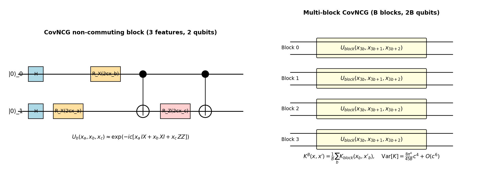
| Backend | MCC | Accuracy | AUC | Kernel diag. |
|---|---|---|---|---|
| IBM QPU | 0.408 | 0.700 | 0.792 | 0.771 |
| Statevector simulator | 0.408 | 0.700 | 0.792 | 0.778 |
The hardware run matches the simulator on this setup, though the sample is small (20 train, 10 test). The wider evaluation uses a projected kernel with an SVM on five medical datasets: WDBC, Parkinson's voice, Heart Cleveland, PneumoniaMNIST and BreastMNIST.
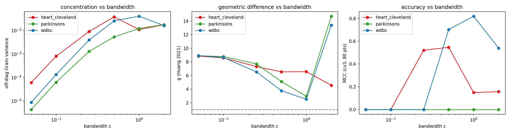
Q-PlasmaNet — Hybrid Classical–Quantum Classifier code →
A frozen CNN does the feature extraction, and a small variational quantum circuit of 4 to 8 qubits sits on top as the classifier. The question I wanted to answer was narrow: can a quantum head on today's hardware match a classical one when both get the same number of parameters?
| Model | Trainable params | F1 | ECE |
|---|---|---|---|
| MobileNetV2 | 2,226,434 | 0.9490 ± 0.0044 | 0.0338 |
| ResNet18 | 11,177,538 | 0.9483 ± 0.0049 | 0.0312 |
| EfficientNet-B0 | 4,010,110 | 0.9475 ± 0.0116 | 0.0379 |
| Small CNN | 389,890 | 0.9235 ± 0.0105 | 0.0362 |
| MLP (parameter-matched) | 191 | 0.9323 ± 0.0095 | 0.0265 |
| Q-PlasmaNet (re-uploading VQC) | 178 | 0.9273 ± 0.0127 | 0.0316 |
The quantum head ties with the MLP that has the same parameter count, and both sit below the 2.2M-parameter CNN. Parity at equal budget. Not an advantage.
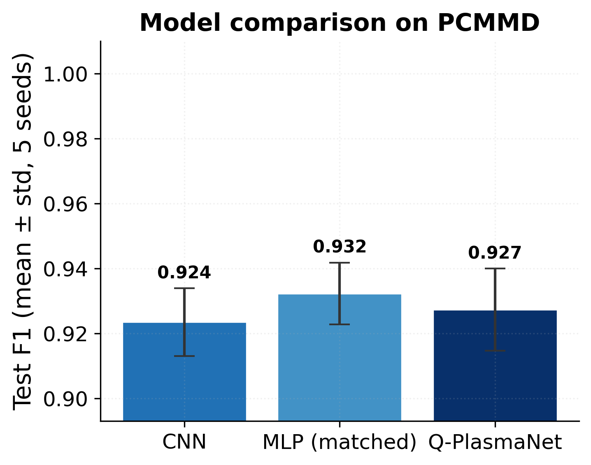
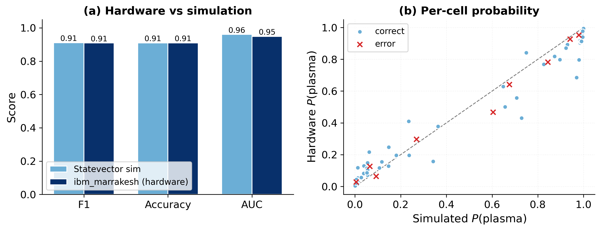
ibm_marrakesh: F1 0.9091 at 1024 shots vs. 0.9109
on the analytic statevector simulator. enlargePCMMD — Federated Learning and Knowledge Distillation for Plasma Cell Detection code →
Telling plasma cells apart from other cells in bone marrow crops, for multiple myeloma. I ran the same task four ways: normal centralized training with 5-fold cross-validation, few-shot curves to see how little data is enough, knowledge distillation into a smaller model, and federated training with one client per patient.
| Backbone | Accuracy | Macro F1 | ROC-AUC | ECE |
|---|---|---|---|---|
| ResNet50 | 0.9877 ± 0.0060 | 0.9826 ± 0.0081 | 0.9965 | 0.0109 |
| MobileNetV3 | 0.9867 ± 0.0065 | 0.9809 ± 0.0101 | 0.9943 | 0.0163 |
| EfficientNet-B0 | 0.9852 ± 0.0052 | 0.9789 ± 0.0080 | 0.9940 | 0.0179 |
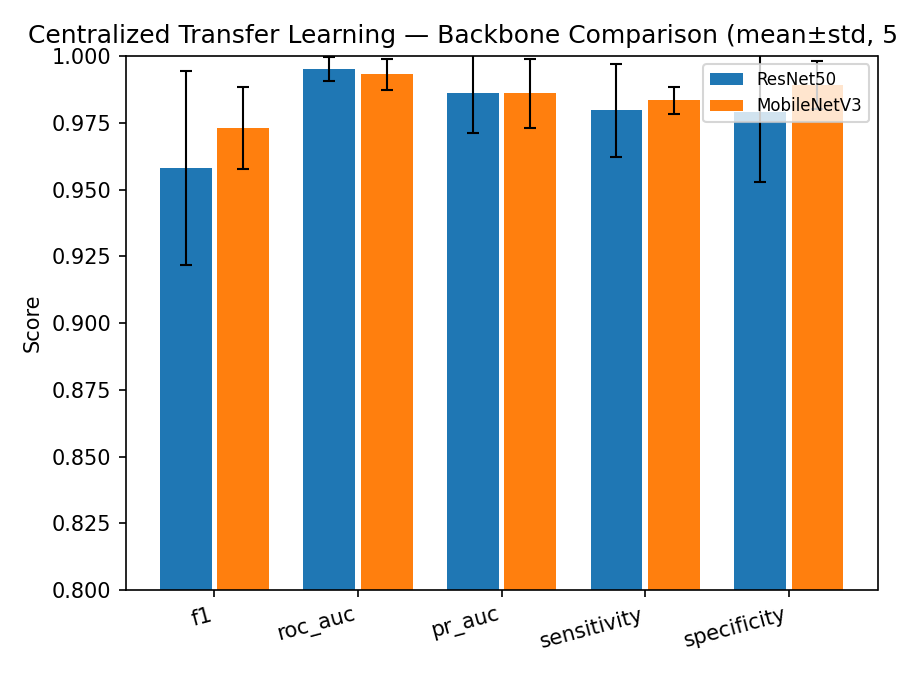
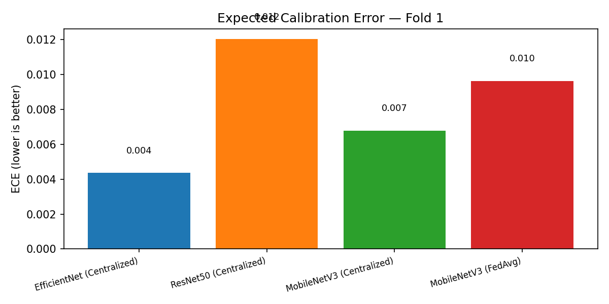
Federated training keeps up with centralized training when clients are balanced (0.990 test accuracy), but falls to 0.883 once the client data gets very uneven. Distillation works well here: the small MobileNetV3 student reaches 0.979 F1 against the teacher's 0.985, where the same student without distillation gets 0.948. Splits are patient-disjoint and duplicate images are removed by hash. One caveat worth stating: the federated part is a training simulation, so it does not provide differential privacy.
Direct-WAM — Self-Supervised Denoising for Two-Photon Calcium Imaging code →
Denoising two-photon calcium recordings without clean targets. The idea is to look at each self-supervised objective through the bias it leaves behind. From that you get an error floor for each objective, a condition telling you when combining several of them helps, and a limit on how much a distilled student can inherit.
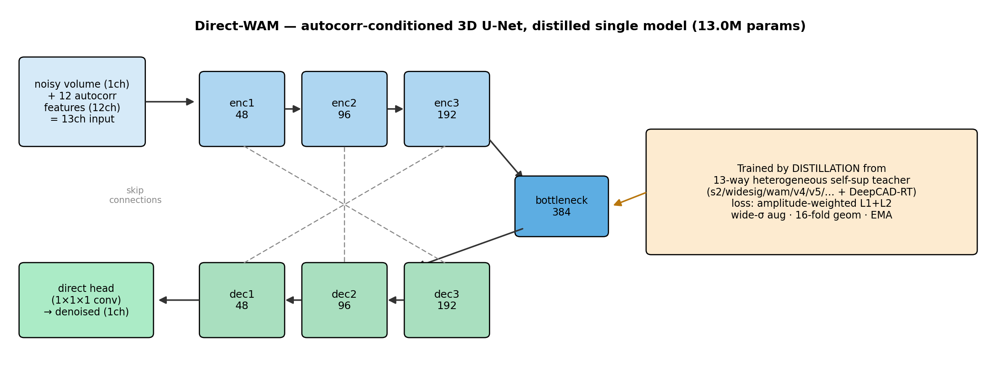
| Method | Supervision | stSNR gain |
|---|---|---|
| DeepCAD-RT (faithfully retrained) | Self-supervised | +23.65 dB |
| Direct-WAM (GT-calibrated teacher) | Not self-supervised | +20.39 dB |
| Direct-WAM (F0-free) | Fully self-supervised | +18.15 dB |
Retraining DeepCAD-RT properly puts it several dB above the number usually quoted for it, and above my own model. Direct-WAM does not beat it on stSNR and I am not claiming otherwise.
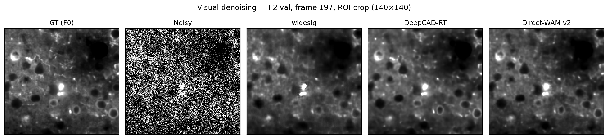